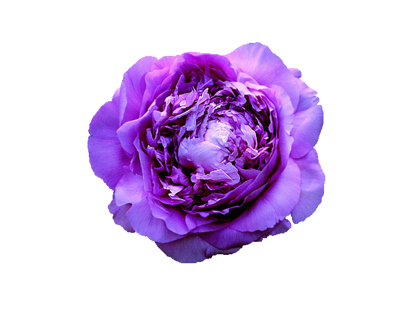

<!DOCTYPE html PUBLIC "-//W3C//DTD XHTML 1.0 Transitional//EN"
  "http://www.w3.org/TR/xhtml1/DTD/xhtml1-tansitional.dtd"><!--加上这句可以不抖动哦-->
<html>
   <head>
      <title> Flower Rain </title>
      <style type="text/css">
        *{
		   margin:0px;
		   padding:0px;
		}
		.pic{
		  width:40px;
		  height:32px;
		  position:absolute;
		  left:-1px;
		  top:-1px;
		  
		}	
        #div1{
		 width:auto;
		 height:600px;
		 background-color:#FFDAF0;
		 margin:0px auto;
		}	
        .div2{
		 width:800px;
		 height:1px;
		 background-color:#FFFFFF;
		 margin:0px auto;
		}				
	  </style>
	  <script language="javascript" src="jquery.js"></script>
	  <script language="javascript">
      $(function(){
		 for(var i=1;i<39;i++)
		   $("#div1").append("");
		 
		 var len = $("#div1 .pic").length;
		 var bodywidth=document.body.clientWidth;
		 var bodyheight=document.body.clientHeight;
		 
         function flowerdrop(){
		
		  for(var i=0;i<len;i++)
		   {
		      $temp=$("#div1 .pic").eq(i);
			  var le1=parseInt($temp.css("left"));
			  var top1=parseInt($temp.css("top"));
			  var bodybuttom=500-parseInt($temp.css("height"))-5;
			  var bwidth=bodywidth-parseInt($temp.css("width"))-20;
	            
			  if(le1<0||top1>bodybuttom)
			  {
			    if(le1>0)
				{
				 var $clone1=$temp.clone();//复制节点
				 var clonex=Math.random()*20;
				$clone1.css("top","+="+clonex);
				//alert($clone1.css("top"));
				
				$(".div2").append($clone1);//添加节点
				}
				
				var yoffset=Math.random()*10+0.6;//设置花朵这次的下落速度
				var xoffset=Math.random()/3+0.05;//设置x方向的小偏移
				
			 	$temp.attr("off_x",xoffset);  //记录到自己的属性中
				$temp.attr("off_y",yoffset);
				
				$temp.css("top",0);//设置初始花朵的x坐标
				x=Math.random()*20+Math.random()*bwidth;
				$temp.css("left",x)
				
			   }
			  $temp.css("left","+="+$temp.attr("off_x")+"px");//每次都以同样的速度下落
			  $temp.css("top","+="+$temp.attr("off_y")+"px");
		   } 
		  }
 
         function delpeony()
		 {
		    //$(".div2 .pic:eq(1)").effect("explode");  //删除节点
		    $(".div2 .pic:eq(0)").remove();  //删除节点
		 }
		//  var setid=setInterval(delpeony,500);
		  
		  var setid=setInterval(flowerdrop,100);//在jQuery下需要这样写,函数名不加括号和引号;
		
		 $("#qu").click(function(){
		    clearInterval(setid);
		   setid = setInterval(flowerdrop,100);
		 });
		 $("#wo").click(function(){
		    
		    clearInterval(setid);//clearInterval使用的是setInterval的Id 要给它取个名字才好清除
		 });
		  
});
	   
	  </script>
   </head>
   <body >
      <div id="div1">
	  </div>
	  <div class="div2">
	  </div>
	  <input type="button" id="wo" value="Stop"/>
	  <input type="button" id="qu" value="Continue"/>
   </body>
</html>

